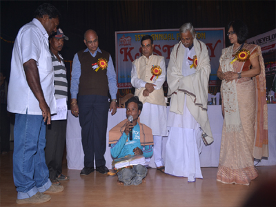

Kastury is a non profit organisation under the societies registration act of 1860 based in Odisha India, began its journey in 2000 to create a backbone of the patients in the need of blood, especially Thalassemia and create mass awareness about blood donation.
We also focus on Child Education for rural and urban areas, creating a platform to change their future and building a positive attitude in them. We have taken a responsibility for Sr. Citizen Welfare to give them a better way of living, a space to live in their own conditions with healthiness and happiness. We haven’t forgotten the danger we created to environment hence we work for environment education and awareness.
It was not a mere hobby or an occasional exercise to run the activities on the pattern of several such existing institutions part time basis. It was a mission of creating a human chain of emergency blood donors with valid details, complete verification of the donor as well as of the needy to prevent misuse and effective management systems. We wanted to inculcate positive attitude, good human values in children and give a secure, healthy and happy environment to our elders.
We also wanted to develop a sense of awareness about environment and work towards a green environment for our future generations. The whole course required volunteers to aware people and contributes their time & skills. We needed to have people with the right attitude and vision. More than anything else we required support and funds, small and big from individuals, institutions and corporate houses.
